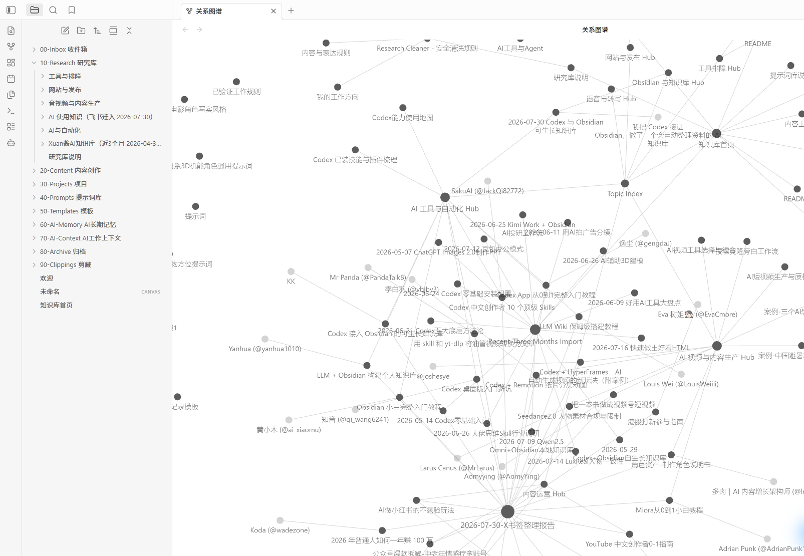

今天做的并不是“往 Obsidian 里塞文件”。真正要解决的是一个更实际的问题：当资料来自飞书、网页、项目文件夹、提示词、工作对话和日常实践时，几周以后我还能不能知道它从哪里来、值不值得信、和哪个项目有关、下一次又该怎么用？所以这次搭建的目标不是一个好看的资料库，而是一套能持续整理、复用和自我校正的个人工作系统。

First Principle
先定义：资料不是资产，能再次产生结果的知识才是
收藏、下载和转发只能制造“我见过”；把来源、场景、验证状态和下一步行动保留下来，才会形成可调用的能力。
为什么今天要先做知识库
AI 时代最容易被误解的一点，是以为“知道更多工具”就是优势。但模型、插件和热词变化非常快。真正会留下来的，是你对问题的判断、已经验证过的工作顺序、能复用的提示词、项目失败过的原因，以及把这些东西串起来的上下文。
所以文章标题里说“资产”，不是说资料越多越好。没有来源、没有分类、没有实践记录的内容，只是更大的信息噪音。知识库的价值在于：它让一条经验从一次聊天里出来，变成下一次项目可以直接调用的依据。
这座知识库的原则：不追求把所有东西都收进来，只追求把未来的自己和 AI 需要再次使用的东西，放在找得到、看得懂、敢采用的位置。
Architecture
怎么搭：先搭“流向”，再搭文件夹
目录不是按软件功能分，而是按一条知识从外部进入、被使用、被验证到沉淀的生命周期分。
这次建立的八个工作区
新资料唯一入口
已整理的研究资料
选题、脚本、内容工作台
真实项目与决策
可复用提示词
重复任务模板
已验证长期规则
与 Codex 协作上下文
已过期或仅备查
这套分区背后有一个简单约束：外部资料先入收件箱；清洗和分类后进研究库；真的用于写内容或做项目时，再连接到内容与项目；只有被实践验证过的结论，才能进入“AI 长期记忆”。这样可以避免把一篇未经验证的教程误当成自己的工作规则。
首页不是装饰，是地图
知识库首页做成 MOC（Map of Content）：快速入口指向收件箱、研究、内容、项目、提示词、长期记忆和 AI 工作上下文。它同时写明固定流程：收集 → 预览清洗方案 → 保留原文并分类 → 在项目里实践 → 把验证结论写回长期记忆 → 定期巡检孤立、重复、过期和无来源的笔记。
Import & Provenance
怎么把旧知识搬进来：先筛选，再导入，永远保留来源
导入的重点不是“搬运成功”，而是每一条内容未来仍能回到原始出处，知道它属于谁、什么时候产生、是否应该继续相信。
今天实际完成的两批迁入
- 飞书 AI 使用知识：导入 12 篇文档，按教程与方法、AI 工具与 Agent、开发与自动化、技术观察、使用说明分区；每篇笔记的 frontmatter 保留飞书来源链接和导入日期。
- 第二批近期 AI 资料：只筛选已确认发布时间在 2026-04-30 至 2026-07-30 的 14 篇内容，落在 AI Agent 与工作流、AI 视频、AI 工具、AI 做 PPT、AI 编程、本地知识库等分类中。
- 本机可复用经验：把视频生产、博客发布、语音转写、Codex 配置和提示词资产先整理成待审核包；敏感密钥、声纹参考、隐私记录和模型/依赖目录不入库。
导入时做了什么，而不只是复制
- 保留原文和原始链接，不把别人写的经验伪装成自己的结论。
- 去掉固定宣传区、重复导航等对学习无帮助的页面噪音，但不篡改正文观点。
- 给导入笔记写入来源、日期和标签；让搜索、图谱和后续 AI 检索都能识别上下文。
- 把同主题资料连接到 Hub、索引或项目笔记，而不是让它们以孤岛状态堆在文件夹里。
Current State
现在搭成什么样：124 篇笔记，开始出现自己的“星球”
图谱的意义不是炫酷，而是快速发现哪些主题形成了密度、哪些笔记还孤立、哪些关系缺少连接。
如何读这张图
图里密集的节点不是“内容多就好”，而是说明它们已经通过索引、引用或项目关系发生了对话。今天最重要的不是让每个点都连成一团，而是先保证核心主题有 Hub：AI 工具与自动化、内容工作台、AI 视频与内容生产、项目管理、提示词库和长期记忆。未来每做完一个项目，都应该至少留下一个项目总结，连接到用过的流程、提示词和真实结论。
Operating System
以后怎么让它自己长：每一次工作都走同一条闭环
“自生长”不是让 AI 自动堆素材，而是让每次输入、验证和复盘都有明确的落点。
一条可长期执行的工作流
新链接、网页、灵感、文件先进入 Inbox，不在聊天窗口和下载文件夹里失踪。
先看来源、时效、用途和重复度；再提出分类与标签方案。没有确认，不删除原资料。
研究资料放进主题 Hub；正在使用的内容连到项目、脚本、提示词或 SOP，而不是只放一个路径。
项目跑完后写清结果、失败原因、适用条件和验证方式。只有这一层才进入长期记忆。
检查孤立节点、重复文章、过期教程和缺失来源；该归档的归档，该补索引的补索引。
三个一定要守住的边界
- 未经验证的内容不升格为规则：收藏的教程可以参考，但不能直接变成长期记忆。
- 敏感资料不入知识库：API Key、Token、声纹样本、隐私记录和本地模型目录保持在私有位置。
- 发布与外部同步仍要确认：知识库用于帮助决策，不替代授权；涉及公开发布、账号和外部服务时，仍然要单独确认。
What Comes Next
下一步不是继续囤资料，而是拿它解决一个真实问题
知识库真正的验收方式，不是节点数，而是下一次做视频、写博客、搭工作流时，它能否让决策更快、更准、更可追溯。
接下来的三个动作
我会优先把下一次真实项目的“目标—素材—流程—结果—复用规则”完整写入，而不是再批量导入一百篇文章。只有当资料开始帮助完成新项目，个人知识库才从静态文件夹变成真正会增值的资产。
今天的结论：未来最难被替代的，不是你收藏过多少工具，而是你能不能把经历过的项目、判断过的资料、验证过的流程，沉淀成一套自己和 AI 都能持续调用的系统。知识库不替你思考，但它让每一次思考不必从零开始。